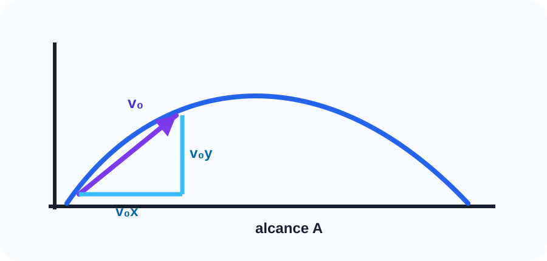

queda livre e lançamento vertical. Material refeito com linguagem didática, matemática revisada, exemplos resolvidos e exercícios comentados.
CursoUniverso Relativo
ÁreaFísica
CinemáticaBloco 6
Roteiro do bloco
01. Aceleração da gravidade
02. Queda livre
03. Lançamento vertical para cima
04. Altura máxima
05. Convenção de sinais
Como estudar: leia a explicação, refaça os exemplos sem olhar a resolução e depois tente os exercícios. A matemática fica mais segura quando cada símbolo é entendido antes da substituição.
Introdução
Movimentos Verticais organiza uma parte importante da Física. Neste bloco, o foco é entender o fenômeno, reconhecer as grandezas, usar unidades corretas e interpretar cada resultado.
Antes de aplicar qualquer fórmula, pergunte: qual é o sistema físico, quais dados foram fornecidos e qual grandeza o problema pede?

Diagrama autoral para decomposição da velocidade inicial em lançamento oblíquo.
Conceitos principais
Aceleração da gravidade
Este ponto define a linguagem do bloco. Ao estudar aceleração da gravidade, observe quais grandezas aparecem, como elas são medidas e qual relação física conecta os dados.
Queda livre
A ideia central é evitar substituição mecânica. Primeiro interpretamos a situação, depois escolhemos a expressão matemática compatível com o fenômeno.
Lançamento vertical para cima
Sempre escreva as unidades junto dos valores. Isso ajuda a perceber conversões necessárias e evita resultados numericamente corretos, mas fisicamente sem sentido.
Altura máxima
Quando houver direção, sentido, imagem, onda ou troca de energia, desenhe um esquema simples. O diagrama costuma revelar a equação correta.
Convenção de sinais
Finalize conferindo se o resultado responde exatamente ao que foi perguntado e se a ordem de grandeza é plausível.
Erro comum: copiar uma fórmula antes de entender o que cada símbolo representa. Antes de substituir valores, escreva as unidades e confira se as grandezas pertencem à mesma situação física.
Fórmulas essenciais
Fórmula-chave
Velocidade vertical
v = v0 + g · t
vvelocidade vertical final
v0velocidade inicial
gaceleração da gravidade com sinal
ttempo
Exemplo simples: Se o eixo positivo é para baixo, pode-se usar g = +10 m/s².
Fórmula-chave
Posição vertical
y = y0 + v0t + (g · t²)/2
yposição vertical
y0posição inicial
ggravidade com sinal
ttempo
Exemplo simples: Se o eixo positivo é para cima, normalmente g = −10 m/s².
Exemplos resolvidos
Exemplo 1
Uma pedra é abandonada do repouso. Use g = 10 m/s². Qual é sua velocidade após 3 s?
Resolução passo a passo:
Como foi abandonada, v0 = 0.
Adotando sentido para baixo positivo: v = 0 + 10 · 3.
v = 30 m/s.
A velocidade é 30 m/s para baixo.
Exemplo 2
No ponto mais alto de um lançamento vertical, qual é a velocidade instantânea?
Resolução passo a passo:
O objeto ainda está sob aceleração da gravidade.
No ponto mais alto, ele para momentaneamente antes de descer.
Portanto, a velocidade instantânea é nula.
No ponto mais alto, v = 0.
Erros comuns
Atenção: Dizer que a gravidade zera no ponto mais alto.
Atenção: Esquecer que o sinal de g depende do eixo escolhido.
Atenção: Misturar altura com deslocamento vertical sem referência.
Exercícios para fixação
Exercício 1
Uma pedra é abandonada do repouso. Use g = 10 m/s². Qual é sua velocidade após 3 s?
Resolução completa:
Como foi abandonada, v0 = 0.
Adotando sentido para baixo positivo: v = 0 + 10 · 3.
v = 30 m/s.
A velocidade é 30 m/s para baixo.
Exercício 2
No ponto mais alto de um lançamento vertical, qual é a velocidade instantânea?
Resolução completa:
O objeto ainda está sob aceleração da gravidade.
No ponto mais alto, ele para momentaneamente antes de descer.
Portanto, a velocidade instantânea é nula.
No ponto mais alto, v = 0.
Exercício 3
Explique a ideia central de Movimentos Verticais sem começar por fórmula.
Resolução completa:
Identifique o fenômeno físico estudado.
Cite as grandezas principais.
Finalize conectando conceito, unidade e interpretação.
Resposta esperada: explicação física clara, com grandezas e unidades.
Exercício 4
Aponte um erro comum desse bloco e corrija-o.
Resolução completa:
Escolha uma confusão frequente da seção de erros comuns.
Explique por que ela é incorreta.
Mostre o procedimento correto.
Erro identificado e correção justificada.
Exercício 5
Monte um quadro de dados antes de resolver uma questão numérica do bloco.
Resolução completa:
Liste dados fornecidos.
Converta unidades quando necessário.
Escreva a fórmula somente depois de identificar o pedido.
Quadro organizado com dados, unidade e incógnita.
Resumo final
Queda livre é movimento sob ação da gravidade.
No lançamento vertical para cima, a velocidade diminui até zero.
A gravidade permanece durante todo o movimento.
A escolha do eixo define os sinais.
Fechamento do bloco: uma resposta de Física só está completa quando traz valor numérico, unidade correta e interpretação do resultado.
Referências das imagens
Lançamento oblíquo: diagrama autoral criado para o projeto Universo Relativo, arquivo local cinematica-lancamento.svg.
Logo e identidade visual: Universo Relativo, usados como marca do material didático.